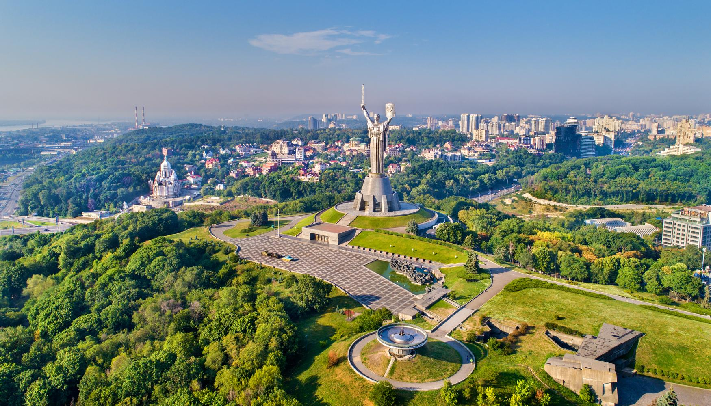
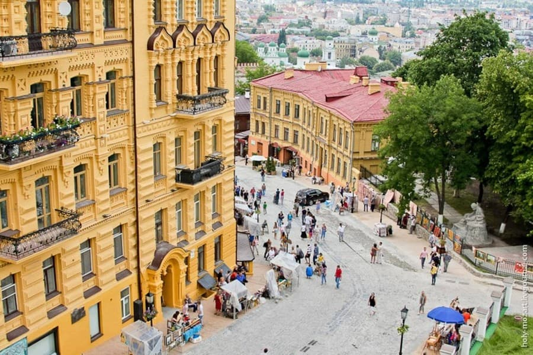
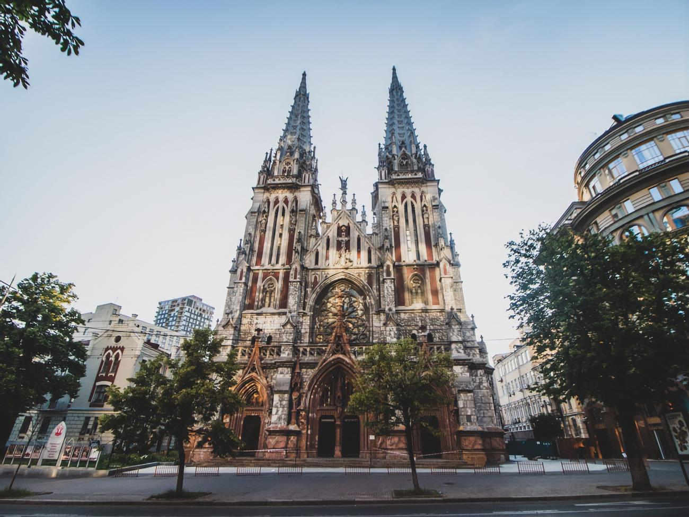
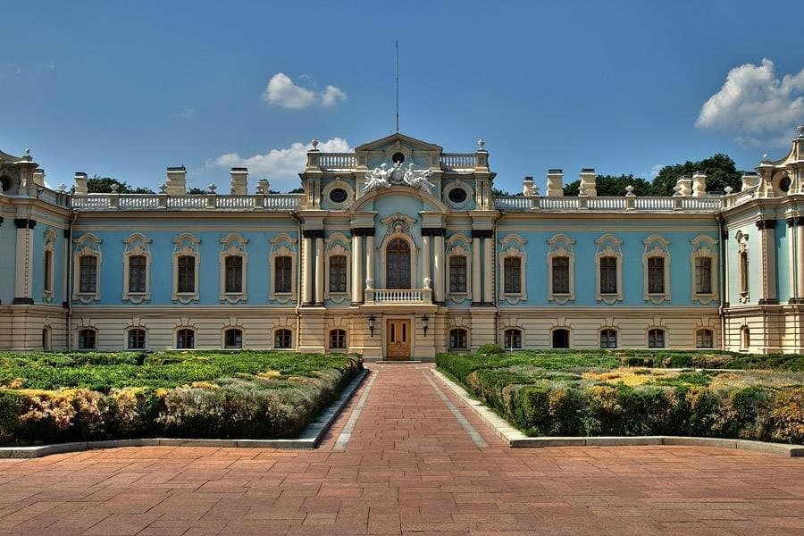
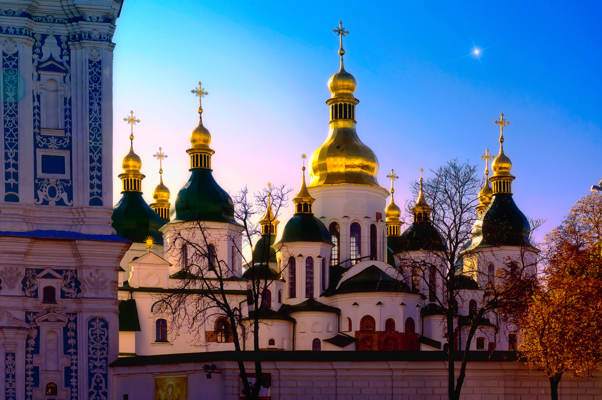
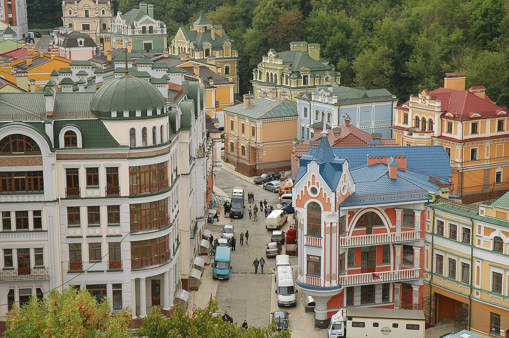
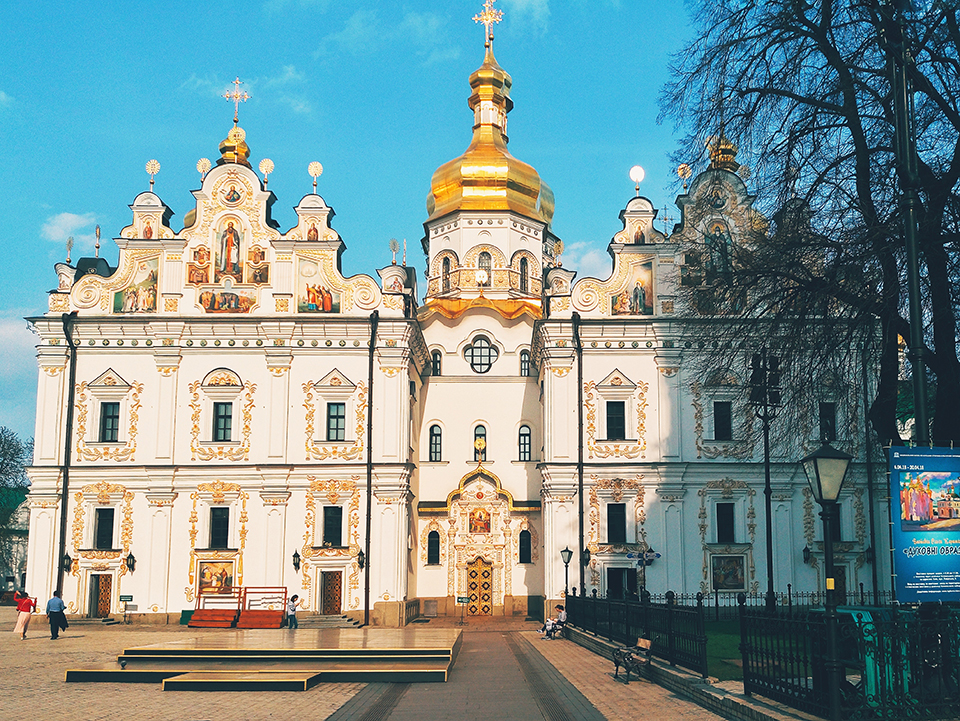

Батьківщина-Мати
Батьківщина-мати — популярне місце в Києві, яке є грандіозним монументом, зведеним на правобережжі Дніпра в 1981 році. Це шістнадцятий за своєю висотою пам’ятник світу. Пам'ятник присвячений героям Великої Вітчизняної війни. Він вражає своїми величезними розмірами і оточений мальовничим парком, в якому із задоволенням гуляють дорослі і діти. Крім того, тут можна відвідати цікаву музейну експозицію про історичні факти військових діях 1941-1945 років.
Андріївський узвіз
Андріївським узвозом називають мальовничу вулицю Києва, яка була найстарішим шляхом, що з'єднує важливі торговельні території. Свою назву це цікаве місце Києва отримало від Андріївської церкви (зведеної у середині 18 століття), котра розташована вгорі узвозу. На звозі, безсумнівно, є на що поглянути. Саме тут ви зможете зануритися в атмосферу старовини, затишку та долучитися до незвичайної історію, яка панує тут на кожному кроці. Вашій увазі постануть чудові архітектурні шедеври, легендарні провулки та площі, а також такі культурні заклади, як Музей Булгакова та Музей однієї вулиці.
Миколаївський костел
Величний і таємничий в своїй архітектурі Миколаївський костел не може не викликати щирого захоплення. Можна годинами милуватися на його вигадливі візерунки, проникаючи вглиб століть. Він являє собою римсько-католицький храм, присвячений Святому Миколаю. З 1980 року в його будинку розміщується Будинок камерної та органної музики. Одне з тих місць, які варто відвідати в Києві.
Маріїнський палац
Один з найкрасивіших архітектурних шедеврів столиці, Маріїнський палац, розташований на правобережжі річки Дніпро. У його розкішних приміщеннях розміщується резиденція українського президента, де проводяться знатні прийоми і урочисті церемонії державного значення. Архітектурний стиль палацу — бароко. Наказ по його будівництву в 1744 році видала сама імператриця Єлизавета.
Софіївський собор
Софія Київська має тисячолітню історію. Її було споруджено за часів Ярослава Мудрого – мармуровий саркофаг з його поховання зберігся дотепер. Інтер’єр Софії вражає древніми фресками та мозаїками. Головна, п’ятиметрова заввишки мозаїка Богоматір Оранта пережила усі руйнування, що їх зазнавав собор упродовж віків, і вважається оберегом Києва та України. Маловідома «родзинка» Софії схована всередині веж, обіч сходів. Це стінопис на світські сюжети й сотні графіті, що їх у давнину вишкрябали на стінах прості кияни.
Воздвиженка
Пустир на місці знесених ще у 1980-ті хаток урочищ Гончарі та Кожум’яки (згадайте фільм «За двома зайцями») на початку двохтисячних нашвидкуруч забудували стилізованими під старовину будинками. Вартість квадратних метрів зашкалювала. Проте ті, хто придбали тут житло, так в нього й не заселилися: через старі комунікації та дешеві будматеріали «елітні» будинки виявилися непридатними для життя. Проте після недавньої реконструкції з мертвого кварталу Воздвиженка стрімко перетворюється на модний район. Чи не щомісяця тут відкриваються нові бари, галереї, магазини актуальних брендів і спортклуби. А ще вона лишається знахідкою для тих, хто шукає нетипові місця для фотосесій.
Пейзажна алея
Це саме те місце, де неодмінно треба фотографуватися. Якщо ви хочете зробити яскраві, незвичайні кадри – вам сюди. 2009 року в межах боротьби з незаконною забудовою алеї тут було створено дитячий майданчик із дивовижними персонажами з «Аліси» й інших книжок. Серед них – викладені мозаїкою тридцятиметрова кішка-стоніжка, дитяча гірка, на якій можна вистромити голову з усмішки Чеширського кота, фонтани у вигляді слоника та зебр, лавки-кролики та багато іншого.

Володимирська гірка, фунікулер, пішохідний міст
З чарівної Володимирської гірки відкриваються краєвиди Дніпра, Подолу, Лівого берега, Печерських пагорбів. Схилами гори розбігаються доріжки, вибрукувані старовинною жовтою цеглою. На середній терасі ще 1853 року встановлено пам’ятник князю Володимиру, який хрестив Київську Русь-Україну. Саме біля цього пам’ятника починається (чи закінчується) новий пішохідний міст, який сполучає Володимирську гірку з Аркою дружби народів.
Між верхівкою та підніжжям гори курсує фунікулер – єдиний в Україні. Він незмінно діє вже понад століття: відкриття «Михайлівського електричного підйому», що найкоротшим шляхом з’єднав Верхнє місто і Поділ, відбулося 7 травня 1905 року.

Успенський собор
Головний собор Києво-Печерської лаври було споруджено в другій половині XI ст., а у XVIII ст. перебудовано у формах українського бароко. Довгі віки він був усипальнею князів, митрополитів, можновладців. Під час війни, 3 листопада 1941 року Успенський собор був висаджений у повітря. Як один із символів України, його відбудували вже за часів незалежності, у 1998–2000 роках.
